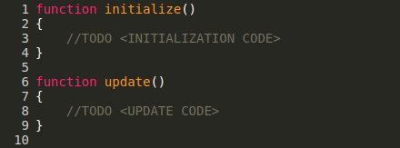

In this tutorial we will learn how to create a simple platformer game inside nunuStudio. We will explore how to control physics elements, import external resources and use keyboard and gamepad input.
This should take about 2 to 3 hours to complete, but its totally fine for new programmers to take longer, don't rush it take your time and try to understand every step of the tutorial.
For this tutorial some previous programming experience is recommended but i will try to explain as much as possible every code needed.
Lets start by creating a simple level for our game. All interactive objects in our game should be created using the physics objects. Phyics objects are invisible, to make them visible in the game we need to attach a visual representation to them.
Start by adding a physics cube, when selected the physics cube will be shown in the editor in green, but when we press start it will becore invisible.

Lets now add a visual representation to our cube, we achieve this by creating a new cube and attaching it as children of the physics cube. To add the new cube as children of the physics cube drag it on the object explorer on top of the physics cube.

After adding a visual representation to our cube we can see that it falls bellow the existing floor, to prevent this we need to add some additional physics elements to be used as floor for our cube.
We can move, resize and scale our cube physics object and the children objects will be afected as well.

The new physics elements need to be configured as static. Static physics element don't move around, they are only used as static walls. To configure the physics as static select it and set the "Type" in the object panel to Static.

Lets now add a camera to our project, cameras controll how the player will see the world, we will use a perspective camera, perspective cameras allow the player to perceive depth and see 3D objects, orthographic cameras are 2D cameras they don't allow the player to perceive distance.

After adding the camera to our scene we need to make it our default camera, to achieve this select the camera object and select the "Use camera" option in the object panel.

Now lets create a new material to make it easier to distinguish our player and the walls we created. To create a new material open the Material menu on the asset explorer and select Standard or Phong Material. To apply the new material to our objects drag it from the asset explorer to the object. I colored mine red but you can choose whatever color you want and even add a texture if you want to.

After adding the material to our cube that we will use as our player we are ready to move on to coding our character behavior. If everything went as expected you should have something similar to this on your computer.

To move our player around we need to create a new script that will be used to controll the player using the keyboard keys. Scripts are objects, so they have a position, rotation, scale, etc, and can have objects attached as children.
To open the code editor double click the script object on the object explorer or right click on top of it and select "Script editor", a new tab will be open with the code editor.
In this tutorial we will use a single script object to controll all objects in the scene, but is possible to have multiple scripts.
Lets start by getting the player object in our script, to get the player object we can use its name, lets rename our physics cube (that will be used as our player) to player. After that we can use the code bellow to get the player object and store it in a variable.
var player;
function initialize()
{
player = scene.getObjectByName("player");
}To get keyboard input we have the Keyboard object, that offers keyPressed, keyJustPressed and keyJustRelease methods that allow us to detect when the user has pressed and released a specific key in the keyboard. For this guide we will use the WASD keys.
To move the player around we will manipulate its body, physics bodies have position, velocity, acceleration and force attributes. We change manipulate those to make the player move around, for better control of the player movement we will manipulate the velocity attribute.
To code bellow detects when the user has pressed the A, W and D key and sets the player velocity accordingly. But after a bit of time we can the see that the player falls of our platform, that because our body is a cube and ends up rotating a bit on its corners changing its direction.
function update()
{
if(Keyboard.keyPressed(Keyboard.A))
{
player.body.velocity.x = -5;
}
if(Keyboard.keyPressed(Keyboard.D))
{
player.body.velocity.x = 5;
}
if(Keyboard.keyJustPressed(Keyboard.W))
{
player.body.velocity.y = 10;
}
}To avoid our player falling down our level we need to block its movement on the Z axis we can achieve this by forcing its position and/or velocity to 0 on that axis.
function update()
{
...
player.body.position.z = 0;
}Now there is still a problem left to solve, everytime the player keeps the W key pressed the player keeps going up. We can only let our player jump when he is touching the ground. To achieve this we need to check if our player is on the ground and create a new variable that will be set true when the player is touching the ground.
To check if the player has touched the ground, we will create a new callback for the cannon.js world postStep event, this callback is called every time after the physics engine updates the object position, we can get a list of contact points and check if those contact points belong to our player if they do that means our player is colliding with something. Now we only need to check the orientation of the contact point, for that we will check the dot product of the contact point direction and the surface normal (we will assume a normal pointing up) is its the floor that should give us a result near 0, we will assume that any value bellow 0.1 is the floor and we will set a canJump flag to true if so.
var player, world;
function initialize()
{
world = scene.world;
player = scene.getObjectByName("player");
player.canJump = false;
var up = new Vector3(0, 1, 0);
var temp = new Vector3(0, 0, 0);
world.addEventListener("postStep", function(e)
{
if(world.contacts.length > 0)
{
for(var i = 0; i < world.contacts.length; i++)
{
//Get contact points
var contact = world.contacts[i];
//Check if any of the physics elements in the contact is our player
if(contact.bi.id === player.body.id || contact.bj.id === player.body.id)
{
//If our player is the first element negate direction and store in temp
if(contact.bi.id === player.body.id)
{
contact.ni.negate(temp);
}
//Else store direction in temp
else
{
contact.ni.copy(temp);
}
//If dot product if near 0 player is touching the floor and can jump again
if(temp.dot(up) > 0.1)
{
player.canJump = true;
}
}
}
}
});
}
function update()
{
...
if(player.canJump && Keyboard.keyJustPressed(Keyboard.W))
{
player.body.velocity.y = 10;
player.canJump = false;
}
...
}Now we are able to control our character and have it moving properly around our level, but our camera is still static, to make it follow our character we can simply equal its position in the X and Y coordinates to the player position.
var player, world, camera;
function initialize()
{
camera = scene.getObjectByName("camera");
...
}
function update()
{
...
camera.position.x = player.body.position.x;
camera.position.y = player.body.position.y + 2;
}We got our player moving but we still cant die, and dont have any obstacles to avoid or enemies to kill. Dont worry we will take care of that now.
Lets start by making our level a bit bigger, add more platforms some places where we can fall off, the fastest way to do this is by duplicating our already existing floor and after rotating, scaling and moving it around, be carefull we want to apply these changes to the physics object not to the visual representation.

Now lets create some obstacles, first lets start with static obstacles and after we can make them move. I will add obstacles in red and change my player color to green, obstacles will also be static physics objects.

After adding our enemies lets create a new group and add all enemies to that group, so that we can distinguish enemies from normal walls and other physics objects. In your object explorer you new group should look something like this.

Now lets get back to our script and add code to detect collision with enemies, lets start by adding an attribute "isEnemy" to all our enemies that we added to the group we just created. We also need to store our player spawn position so that when we die we get back to that position.
function initialize()
{
...
player.spawn = player.position.clone();
var enemies = scene.getObjectByName("enemies");
for(var i = 0; i < enemies.children.length; i++)
{
enemies.children[i].body.isEnemy = true;
}
...
}After this we need to add the enemy collision check to the callback we created ealier in our physics world, we just need to check is there is a isEnemy true value and if so reset our character position and speed.
function initialize()
{
...
world.addEventListener("postStep", function(e)
{
if(world.contacts.length > 0)
{
for(var i = 0; i < world.contacts.length; i++)
{
//Get contact points
var contact = world.contacts[i];
//Check if any of the physics elements in the contact is our player
if(contact.bi.id === player.body.id || contact.bj.id === player.body.id)
{
//Check if is an enemy
if(contact.bi.isEnemy || contact.bj.isEnemy)
{
player.body.position.set(player.spawn.x, player.spawn.y, player.spawn.z);
player.body.velocity.set(0, 0, 0);
}
...
}Before moving on to moving enemies lets add a new static enemy under the floor so that the player dies when it falls off the level, this enemy doesn't need a visual representation.

TODO
Heres the final result for our platformer tutorial.